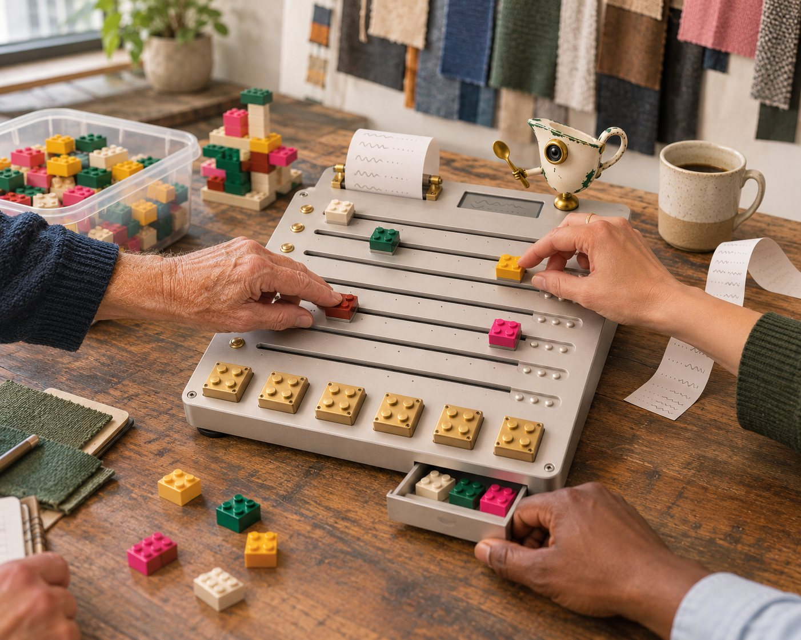

Tacit and intuitive
What you can do but can't fully explain.
Michael Polanyi's "we can know more than we can tell," which David Autor applied to automation.
An invented magazine from an invented future · Feature · Work
The Future of Work / Hardware
A Swedish hardware house, LEGO's boardroom method, the best thinking on letting go at work and a consultancy with a gravy-boat robot walk into the org chart. They come out with a desk object that admits your role is already out of date.
At 8:52 on a wet Tuesday morning, Renee Okafor sat down at her desk and found that part of her job had moved in the night. She could see exactly how far: about four centimeters.
The part was a small rust-red brick labeled SUPPLIER VERIFICATION. It rides on a motorized fader, the kind you'd find on a studio mixing desk. Overnight, an agent had earned enough of that work to slide it toward the far edge of the board. Okafor, who has sourced fabric for 22 years, looked at it for a moment, frowned, and pushed it back.
That push is the whole product.
The job description may be the least accurate document in corporate life. It is written once, usually in a hurry, to describe a job as it existed a few months before anyone was hired to do it. Then it goes into a drawer while the actual work wanders off.
That was merely funny until agents arrived. Employers now expect 39 percent of workers' core skills to change by 2030, according to the World Economic Forum. Stanford's Digital Economy Lab, in an August revision of its "Canaries" paper, finds no widespread job displacement across the economy. But employment of 22- to 25-year-olds in AI-exposed occupations now sits 19 percent below where it would be had it tracked their less-exposed peers, mostly because fewer are being hired. The authors are careful to call that an early indicator, not a causal estimate.
Read together, those findings describe a quiet rearrangement more than a mass replacement. Work is moving task by task, inside jobs that keep the same title, and almost nothing in the organization records the move. The promotion rubric doesn't. The org chart doesn't. The person doing the job often finds out by noticing that a Tuesday has gotten strangely easy, or strangely empty.
The RC-1 Role Charter, which everyone who owns one calls the Plate, is an attempt to make that rearrangement visible, negotiable and a little bit physical. It starts from a blunt premise printed on the box: The job you have now won't be the job you have in two years. We should probably talk about that.
Put a Plate on a desk and it reads as a musical instrument that wandered into HR. It is a slab of bead-blasted aluminum about the size of a laptop, with eight motorized faders running side to side. Each fader carries a studded carriage, and each carriage holds one brick. One brick is one chunk of your work, and you name it yourself in tiny stamped letters.
The left end of each track is marked MINE. The middle is TOGETHER. The right end is HANDED OFF. Glance at the board and you can read your job the way an engineer reads a mix: what's up, what's fading out, what's being shared.
Along the bottom edge sits a row that doesn't move at all. Six heavy brass bricks are screwed to the chassis, one for each kind of knowledge the makers argue agents lack: tacit, experiential, inalienable, organizational, relational and value-based. They have no faders and no route to the right-hand side. They're the only parts of the Plate that are meant to feel permanent.
The hardware is the visible half. The Plate is paired with a Role Charter, a version-controlled document that replaces the job description. Every change is a commit, recording who proposed it, who agreed and what evidence they used. A thermal printer on the Plate's top edge spits out the monthly diff on narrow receipt paper, so the change arrives as an object you have to deal with.
The charter starts on day one. Every job posting written with it carries a half-life clause: We expect at least half of this role to look different within two years. You'll help decide how. This document will be rewritten with you every quarter, and your agreement is required.
The system runs on three motions, and the third is the one that makes the Plate more than a very expensive to-do list.
With the employee's permission, the Charter reads logs from their agents. When an agent has done a chunk of work reliably enough, its fader creeps right. That's a proposal, not a decision. Nothing is final until a human hand lets it stay.
Anyone can drag a brick back, and they don't have to justify it to a machine. They can pull it back for quality or for pleasure. They can also mark it KEEP SHARP, keeping the work on purpose for the day the agent fails.
No brick can lock at HANDED OFF until a new one lands on an open track: EXTEND, for work you couldn't do before agents, or GROW, for a responsibility you've never held.
That third rule is a design opinion in aluminum. It treats an automated task as a promise to say what comes next. It also gives a role three ways to change other than shrinking: collaboration, extension and growth.
Try the rule / invented mechanism
This is how the empty stud would behave. The brick stops short of HANDED OFF until something new has landed on the board.
Status: shared with the agent.
Once a quarter comes the Reset: 45 minutes, a manager, one peer, no laptops and a tub of loose bricks. Everyone builds a model of what the role is turning into, then explains the model instead of themselves. A brick that crosses for good gets a Send-off, a few minutes in which its owner says what the work taught them before the brick goes into a small drawer in the base. The title can change too. At each Reset you can stamp a new one, in your own words.
At the top of the board stands a thumb-high enamel figure shaped like a gravy boat, with one lens and a tiny spoon. When a handed-off job comes back for review, it tips the spoon toward you and the display reads: Made the gravy. Needs you.
The partnership sounds like a dare, and each part of it covers something the others can't.
Teenage Engineering knows how to make a serious tool feel like a toy you can't put down. Its EP Pegs already snap its samplers together with LEGO-compatible connectors. And it reportedly plans to move away from making synthesizers, so it knows something about changing what you do without changing who you are.
LEGO supplies the two halves of its own history. Serious Play is the build-first facilitation method that gives the Reset its shape. Mindstorms, the programmable-brick line retired at the end of 2022, supplies the idea that a brick can have behavior.
The emotional design comes straight from Molly Graham's 2015 essay "Give Away Your Legos," which argued that handing off work you built brings real anxiety, and that normalizing it is a leader's job. The empty stud is that essay's advice to go find the next tower, made mechanical. The Send-off borrows from her more recent argument that big changes need a "funeral" before people can move on.
The stamped title comes from research co-authored by Adam Grant, which found that people who wrote their own job titles reported less emotional exhaustion. There's a neat coincidence here too: Graham took over the WorkLife podcast from Grant, so even the project's intellectual lineage includes a handed-off Lego.
Gravy Robot is the least famous name on the box, and it did the least glamorous work: sitting with people to get the unwritten job out of them. The firm calls this scraping the pan. Before a single fader moves, its method surfaces what's stuck to the bottom of a role, like who you call, what you check twice and what you've never written down. Its working thesis is printed inside the lid: There's still no recipe for people, futures, or change.
"People can live with a job that changes. What wears them down is finding out by accident."
"I've sat with teams through acquisitions and leadership changes, and the org chart is always the last thing to tell the truth," Kirkwood says.

Invented scene · AI-generated concept imageLarkfield Workwear is a 340-person certified B Corp in northern Ohio, which is a long way from Stockholm. It has doubled in size in three years. It put 61 Plates into sourcing and customer care last spring, after its board asked a question nobody could answer: what, exactly, do our people do now?
Okafor pushes back on about one proposal in four. "Not because the agent's wrong," she says. "The audit's fine. I just know the dye house has been 'temporarily' idle since March, and that isn't in any feed. The numbers on that certificate are true and they're about to stop being true."
She lets plenty go, too. The brick marked DOCUMENT CHASING crossed in June and she didn't hold a Send-off for it. "I'd have thrown a party, but I was busy," she says. In its place she stamped a GROW brick that reads HARD CONVERSATIONS, for the mill owners she now has time to visit before a relationship goes bad.
Dana Whitfield, who runs operations, budgeted 45 minutes for her first Reset. It took two hours. "I've been doing performance reviews for 19 years, and I've never once asked someone what part of the job they'd miss," she says. "You can't say 'it's just a report' to a guy who's been doing that report since 2014 and has opinions about the footnotes."
That guy is Marcus Bell, a compliance analyst, and he's still not sold. "My first reaction was that this is a very cute way to watch me lose my job," he says. He made the company put two things in writing before he'd plug his in: the board's data belongs to the person holding the role, and no fader position feeds a headcount model. Then he held a Send-off for his quarterly report and brought donuts. "I'm not saying I like it," he says. "I'm saying it's the first time anybody asked."
"Half the stuff that taught Renee everything she knows is on the far side of the board now. So how do I get to be Renee?"
The sharpest critique came from the youngest person in the room. Tomás Villanueva joined customer care 14 months ago and noticed that his colleagues' faders were moving toward the same right-hand edge where he'd have learned the job.
His question produced the only feature Larkfield added itself, the Apprentice brick. A junior employee keeps a piece of work the agent could do, then compares their answer against the agent's and a senior colleague's. It's slower on purpose. At his last Reset, Villanueva retired the title Customer Care Representative and stamped a new one: Bad News Translator.
The Plate is a novelty. The ideas inside it mostly aren't, and they point in the same direction: jobs are bundles of tasks, the bundles are moving, and the people inside them do better when they have a hand on the move.
The oldest of those ideas is job crafting. In 2001, Amy Wrzesniewski and Jane Dutton argued that employees actively reshape the task and relational boundaries of their jobs, quietly creating different jobs within the ones they were given. A 2017 meta-analysis of 122 samples and nearly 36,000 workers examined how crafting relates to job characteristics and work outcomes. The Plate takes something people have always done in private and puts it on the desk.
The title stamp has unusually direct support. In a field quasi-experiment at a health care system, Adam Grant, Justin Berg and Daniel Cable found that employees who created self-reflective titles reported less emotional exhaustion five weeks later, while two control groups didn't.
The push-and-pull mechanic maps closely onto Stanford's WORKBank audit of 1,500 workers and 844 tasks. Workers felt positively about automation for 46.1 percent of tasks, mostly to free up time for higher-value work. But equal partnership was the dominant preference in 45.2 percent of occupations, and workers generally wanted more human agency than AI experts considered technically necessary. The authors warn that this gap may foreshadow friction. A fader is one way to make that friction productive.
Harvard's field experiment at Procter & Gamble explains the TOGETHER zone. Individuals using AI matched the performance of two-person teams without it, and AI blurred the line between R&D and commercial thinking. Collaboration with agents is an actual state of a job, then, not a waypoint on the road to HANDED OFF.
The brass row is the product's boldest claim, so it's worth checking. Each brick has a real research lineage, though the row as a whole is an argument and not an established taxonomy.
What you can do but can't fully explain.
Michael Polanyi's "we can know more than we can tell," which David Autor applied to automation.
Skill built by doing the work, including when it goes wrong.
Lisanne Bainbridge's "Ironies of Automation": unused skills decay, and later generations may never build them.
What can't be separated from the person who holds it.
Oliver Hart and John Moore on the inalienability of human capital, borrowed loosely from contract theory.
How things really work here, and what's true today.
James Walsh and Gerardo Ungson's organizational memory, spread across people, culture, routines, structures and workplaces.
Trust, respect and knowing who needs to hear what.
Jody Hoffer Gittell's relational coordination: shared goals, shared knowledge, mutual respect.
Deciding what matters and what a trade-off is worth.
Ajay Agrawal, Joshua Gans and Avi Goldfarb, who separate prediction from judgment about payoffs.
WORKBank offers some support for the row as a whole. Compared against wages, the audit's rankings suggest a shift from information-processing skills toward interpersonal and organizational ones. That's about where the brass sits.
Bainbridge deserves the last word here, because her 1983 paper is the reason KEEP SHARP exists. A system that takes over the routine work leaves people to handle the rare, hard exceptions while their practice fades. It's also the strongest case for Villanueva's Apprentice brick, and a reason to take Stanford's 19 percent figure seriously even with its caveats.
The premise on the box is stronger than the evidence. "Completely different in two years" is a provocation, not a finding. The World Economic Forum's figure is 39 percent of core skills by 2030, which is a lot, but it isn't all of them, and it isn't two years. Stanford's newest data shows no broad displacement. The makers would say the provocation is the point, since a half-life clause gets people talking in a way a footnote doesn't. That's probably right, and it's still marketing.
The brass row has an expiry problem too. Autor noted back in 2014 that computer science was already trying to get around Polanyi's paradox by having machines learn from human examples. Some of what's tacit today will be inferred tomorrow. The designers seem to know this. Those six bricks are held down by four small screws, and there's a driver in the box.
The bigger issue is power. A fader you can touch is a satisfying kind of agency, and it may be only a feeling. Okafor can push her brick back, but she doesn't set the budget, and a CFO looking at 61 boards of bricks sliding right will see a staffing plan whatever the terms of service say. Evidence for the method is thin as well: one systematic review found that LEGO's effectiveness as a learning tool remains unclear, and Serious Play's facilitators have a business interest in promoting it. Larkfield's no-layoff pledge runs through 2027. Nobody I spoke with knows what the board will look like the day after it expires.
Still, the Plate gets one thing right that most AI rollouts don't. It treats a change to someone's job as something that should happen with them, in front of them, at a speed they can argue with.
The morning I left Larkfield, SUPPLIER VERIFICATION had crept right again. Okafor picked up the file the agent had prepared and read it for a while. Then she moved the brick about a centimeter toward TOGETHER and left it there. At the top of the board, the little enamel robot tipped its spoon.
"It's getting better," she said, and went to call the mill herself.